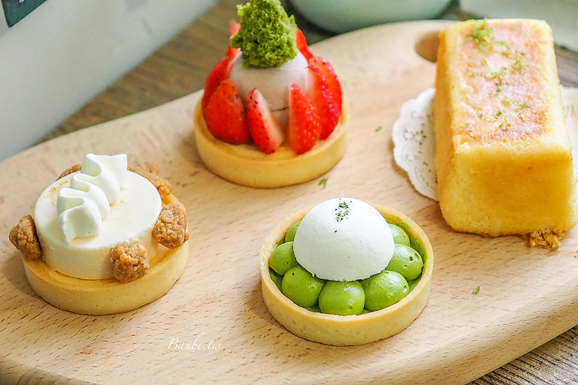
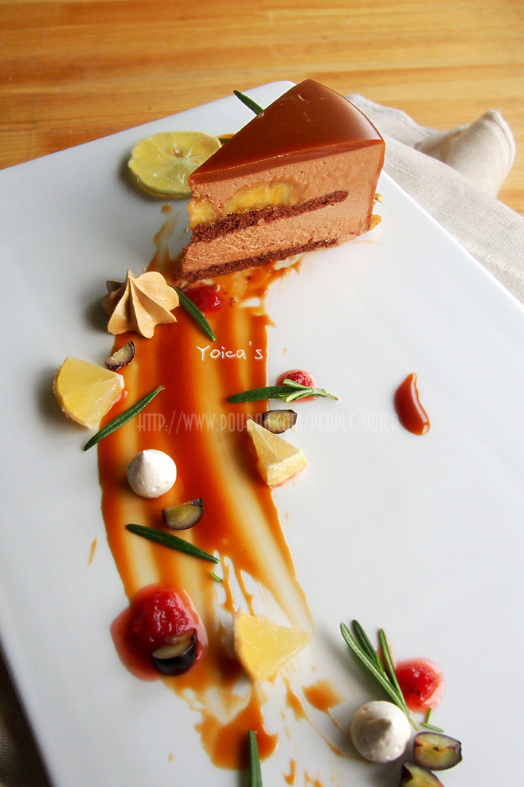
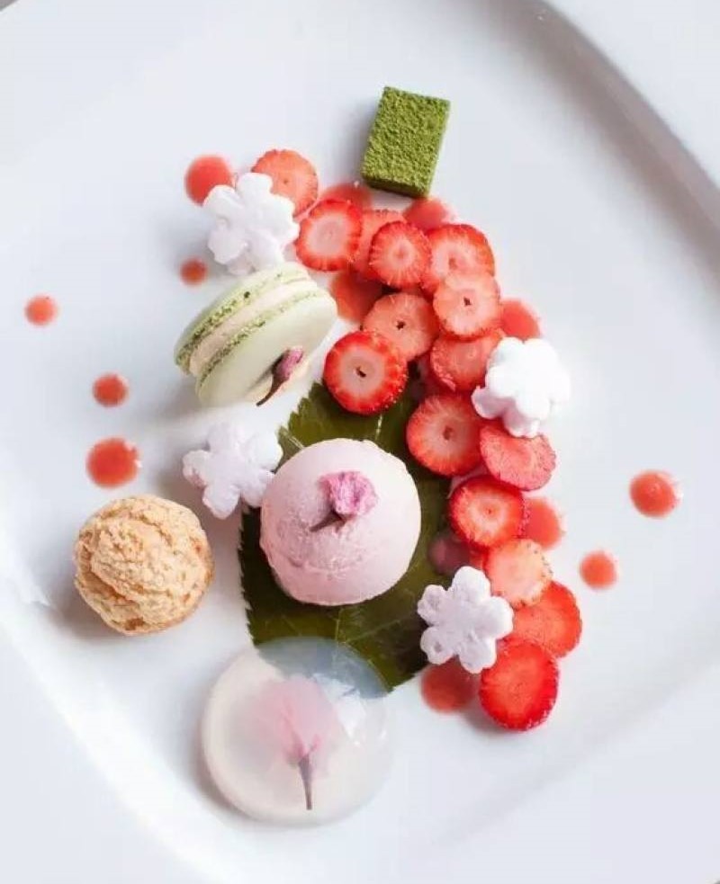
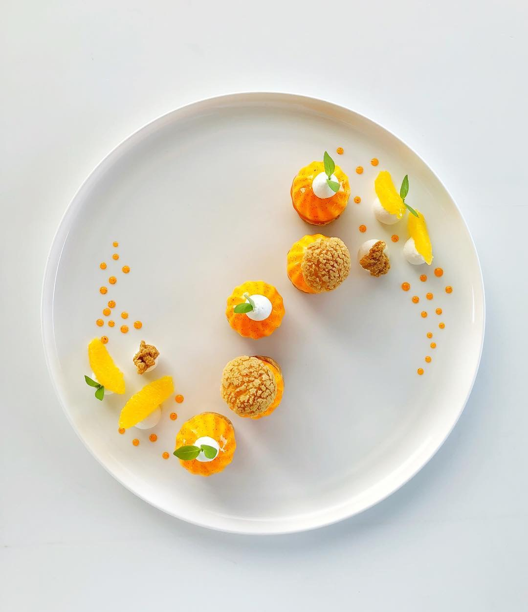
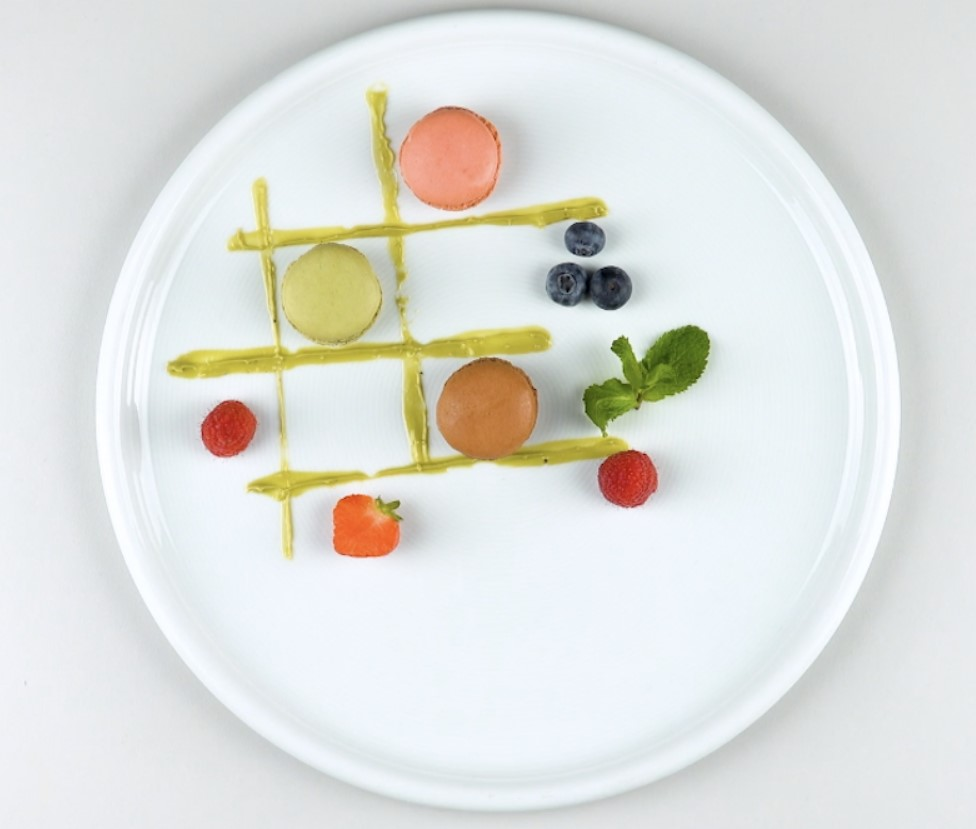
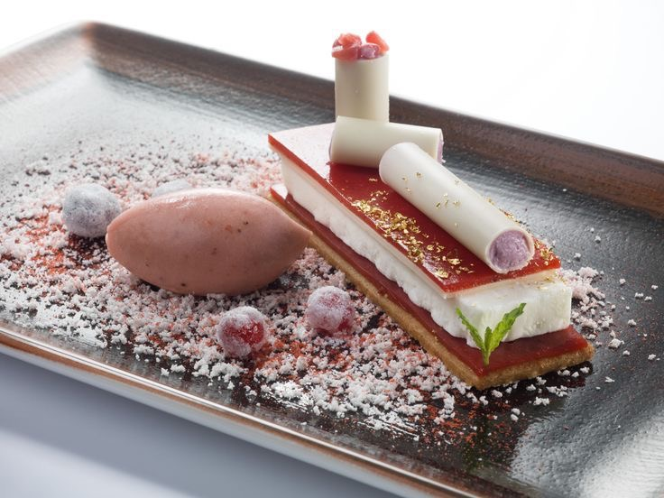
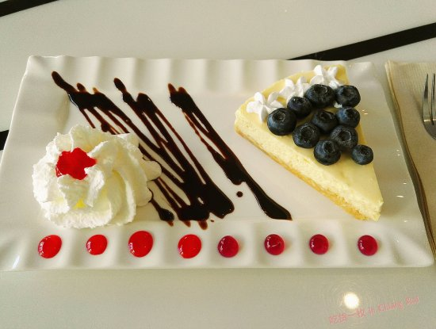

首頁
(current)
最新食譜
Q & A
聯絡我們
問題一 : 製作草莓大福有甚麼要注意的?
糯米蒸熟以後要趁熱的時候慢慢搓揉，揉的越均勻吃起來的口感會越Q彈。
問題二 : 製作司康餅有甚麼要注意的?
很多人會有一個迷思，覺得一定要把麵團表面捍得相當光滑，但其實麵團會因為過度搓揉反而讓烘烤出來的司康過乾，所以建議只要適度搓揉，不需揉到光滑油亮，大約搓揉至麵團表面沒有粉即可。另一個可能讓司康乾口的原因則是麵團過濕導致需要較長的時間烘烤，如此一來便會讓司康成品變得過乾、不夠濕潤。
問題二 : 製作舒芙蕾有甚麼要注意的?
打發蛋白霜是最重要的步驟 蛋白從冷藏取出，維持冰涼的狀態是打發蛋白最適合的溫度，分次加入三次細砂糖打至乾性發泡。 注意事項：乾性發泡蛋白霜會呈現堅挺的狀態，蛋白霜表面光滑，不會水水的，就是蛋白霜最好的狀態。
美味西點!!!!






